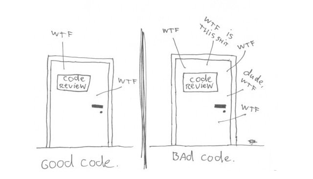
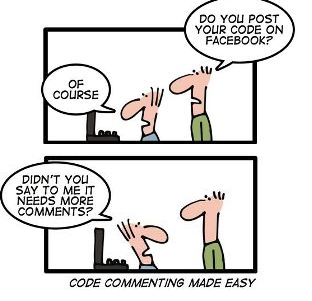
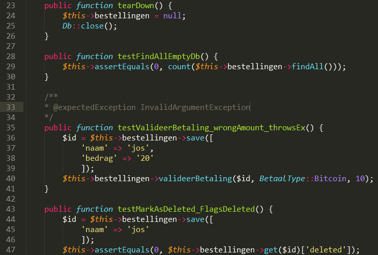
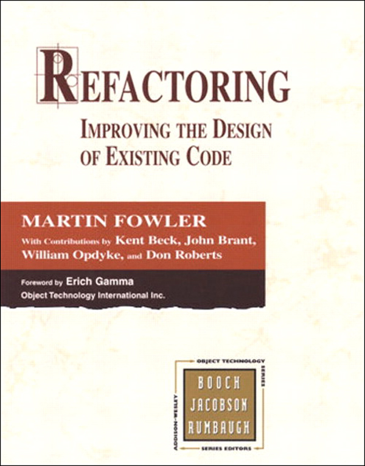
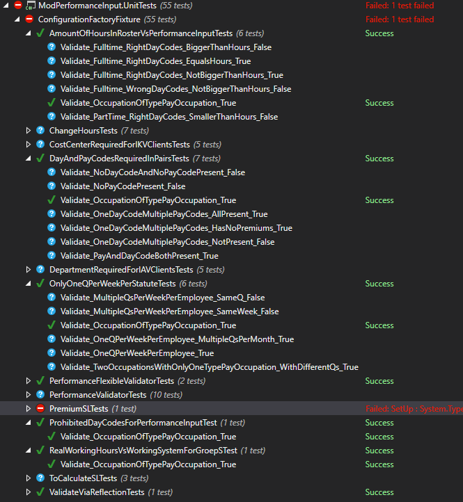
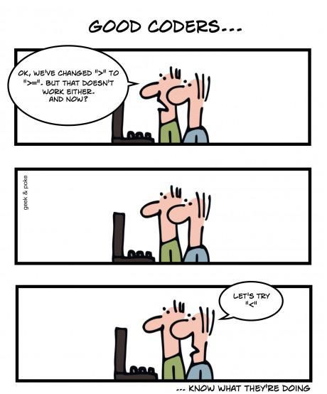
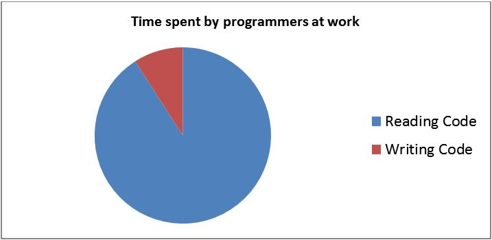

Clean code
Prato NV
Wouter Groeneveld & Luk Weyens
22/09/2016
Introductie
GSM Uit aub
Verstand Aan aub
Vragen stellen toegelaten!
Inhoudsopgave
- Clean code: definities
- Clean code: principes
- Unit testing: definities
- Unit testing: voorbeelden
Clean code deel 1:
definitie
Clean code is code that is easy to understand and easy to change.
function process($obj, $continue = FALSE) {
// echo "starting the process";
if($obj->generate() == NULL) {
return -1;
}
$result = $obj->generate();
if($continue) {
return $result->generate();
}
return $result;
}
function getBookByISBN($isbn) {
$book = array_search($isbn, $this->books);
if($book == FALSE) {
throw new BookNotFoundException("book was not found!");
}
return $book;
}
Leesbaarheid!
Code gets read a lot (at least whenever someone is writing more code), so any school of clean code should emphasize readability. Cleaning up a little wherever you go is required to keep code clean.
Meetbaarheid:
"aantal WTFs per minuut"

Clean code deel 2:
principes
1. Naamgeving:
wat is de ideale naamgeving?
- Het moet correct weerspiegelen waar het voor dient
- Het leunt aan bij de taal die gesproken wordt in het domein
1. Naamgeving: methods/variabelen
$result = $processor->process();
$order = $library->checkOut();
1. Naamgeving: comments
1. Naamgeving: comments
/**
*
* Prolong the book
*
* @param Book $i The book to prolong
* @param DateTime $j The date to prolong to
* @param Person $k The person to prolong the book to
* @return nothing if OK
*
*/
function prolong($i, $j, $k) {
//Check if this book has been checked out by the same person
if($i->person != $k)
//BUSTED!
return "This is not a book you checked out."
else
//Everything OK, prolong the book
$book->checkOutDate = $date;
}
1. Naamgeving: comments
function prolong($book, $date, $person) {
if(!$book->isCheckedOutBy($person))
return "This is not a book you checked out."
else
$book->checkOutDate = $date;
}
2. Functies:
wat is een ideale functie?
2. Functies: verantwoordelijkheden
class Book {
function prolong($date, $person) {
// does only one thing: prolonging the book
}
}
2. Functies: argumenten
function checkoutBook($title, $isbn, $person, $enoughCredit = FALSE) {
// ...
}
class Person {
function checkoutBook($book) {
// ...
}
}
2. Functies: Side effects
function prolong($date, $person) {
if($this->isOverDue()){
$person->credit -= 10;
}
}
oefeningen deel 1
Oefeningen deel 1: story 1
- Gegeven: Empire, Sith, Jedi classes vol funcs.
- Uw taak: verduidelijken! Wat doet wat? Naamgeving!
- Unit testen groen houden! (cmd: > phpunit tests)
PHPUNIT - recap
live demo http://phpunit.de/manual/
Oefeningen deel 1: story 2
- maak een function op Empire, 'convert($jedi)'
Wat zou dit volgens u moeten doen? - maak een function op Jedi, 'equip($saber)'.
Wat zou dit volgens u moeten doen? - Vergeet niet de testen uit te breiden!
Oefeningen deel 1 - discussie
- Zijn alle testen nog groen? Heb je er bijgeschreven?
- Naamgeving - ook doorgevoerd in testen?
- Onthou principes voor volgende oefeningen!
3. Scoping - poging 1
public class BookRepository {
public $db;
public $bookCache = [];
}
$bookRepositoryInstance->db->query('where isOverdue = TRUE');
3. Scoping - poging 2
public class BookRepository {
private $db;
public function getOverdueBooks() {
return $db->query('where isOverdue = TRUE');
}
}
$bookRepositoryInstance->getOverdueBooks();
3. Scoping - global #fail
$checkoutDate = NULL;
function isOverdue($book) {
global $checkoutDate;
// some domain logic here
$checkoutDate = new Date();
}
$book->setCheckoutDate($checkoutDate);
Zie ook static e.a.
4. OO design - poging 1
$bookid = $_POST['bookid'];
function prolong($book, $date, $person) {
$book->checkOutDate = $date;
$person->bookList->push($book);
}
}
prolong($db->getby($bookid), $_POST['date'], $person);
echo "thank you it has been prolonged"
4. OO design - poging 2
class Book {
function prolong($date, $person) {
$person->addToBookList($this);
}
}
$book = new Book();
$book->prolong($_POST['date'], $person);
$view->renderThankYouPage();
class BookTest extends PHPUnit_Framework_TestCase {
public void testProlongAddsToPersonBookList() {
// ...
}
}
4. OO design: polymorphism - poging 1
function getAisle($book) {
switch($book->type) {
case 'nonficition': return 400;
case 'fiction': return 234;
}
}
getAisle({ type: 'nonfiction' });
4. OO design: polymorphism - poging 2
abstract class Book {
abstract public function getAisle();
}
class FictionBook extends Book {
function getAisle() {
return 234;
}
}
class NonFictionBook extends Book {
function getAisle() {
return 400;
}
}
new NonFictionBook()->getAisle();
4. OO design; Trainwrecks
$repository->getBookById(124)->getAuthor()->getAllBooks()->filterByName('train');
4. OO design; Error handling - poging 1
function getBookById($id) {
if($id == NULL) return -1;
return $db->getById($id);
}
4. OO design; Error handling - poging 2
function getBookById($id) {
if($id == NULL) throw new InvalidIdException("id cannot be null!");
return $db->getById($id);
}
Refactoring
Structuur veranderen, zonder inhoud te wijzigen!
Oefeningen deel 2
Dierentuin - story 1
- maak een Dierentuin class
- kan verschillende Dieren (class) ontvangen (function)
- elk dier heeft een grootte en naam:
Neushoorn (40), Giraf(25), Poema (10) - elke dierentuin heeft x beschikbareRuimte afhankelijk van grootte van het dier
wat doe je bij het ontvangen van een te groot dier?
class Dierentuin {
public function bezoek() {
// return [] of dieren
}
public function ontvangDier($dier) {
// ??
}
}
Dierentuin - story 2
- voeder functie op dierentuin
return TRUE of FALSE indien genoeg voedsel voor elk ontvangen dier in de tuin - voedsel heeft een voedingswaarde
Elk dier eet even veel waarde als zijn grootte - Verzin voedsel implementaties om alle edge cases te kunnen testen!
class Dierentuin {
public function voeder($voedsel) {
return TRUE; // ??
}
}
Dierentuin - discussie
- Polymorfisme niet vergeten?
- Genoeg testen geschreven voor elk geval?
- Exceptions gebruikt ipv return code?
Het pareto principe
80% van het werk, met20% van de inspanning
You cannot write perfect software. Therefore, do not waste energy trying;
be pragmatic.
DRY: Don't Repeat Yourself
"Every piece of knowledge must have a single, unambiguous, authoritative representation within a system."
Clean code deel 3:
Unit testing

Waarom unit testen?
Waarom unit testen?
- feedback!
- Denk in code vanuit API standpunt
- Makkelijk voor pair om te volgen
- Alle mogelijke paden gedekt
Eigenschappen van een goede test
- Ontdek sneller bugs
- Leesbaar
- Geautomatiseerd
- Snel & gefocuset
- Herhaalbaar
- Volgorde onafhankelijk
- Productie code makkelijker wijzigbaar
Eigenschappen van een goede test
Geautomatiseerd

Eigenschappen van een goede test
"living documentation"

Test Driven Development (TDD)

TDD: "bugfix" edge case
live demoSoorten testen
unit testing
- Onafhankelijk van externen (db, webservice, ...)
- Snel!
- Véél testen
- Test normaal pad & limieten
- "actieve vijand van de code"
integration testing
- Test geïntegreerd met externen (db, webservice, ...)
- Test integratie twee verschillende lagen
- Trager dan unit tests
- Minder test cases
end to end testing
- Test hele applicatie!
- niet alle limieten
- traag, moelijker onderhoudbaar
- Test integratie alle lagen
OEFENING:
SPREADSHEET
Story 1: simple spreadsheet
- Onbeperkt aantal rijen/kolommen
- Rij = nummer 1 -> 9999...
- Kolom = Cijfer A -> Z, AA -> ZZ, ...
- Cellen zijn standaard leeg ("")
- Cellen kunnen tekst opslaan
- Mogelijk om inhoud van cel uit te lezen
Story 2: numerics and literal values
- Numerische cellen worden automatisch herkend:
Tekst " 124 " (met spaties) wordt het getal 124 (zonder spaties) - Mogelijk om literaire inhoud van cel uit te lezen
Cel met tekst " 124 " heeft literaire waarde " 124 " en waarde 124
Story 3: Formulas
- "=234" is een formule, " =234" (spatie) is tekst
- Waarde van formule "=234" is het getal 234. Literaire waarde = de formule
- Soorten:
- Constanten =124
- Met haakjes =((124))
- Simpele berekeningen =3+5, =5-3, =4*2
- Complexe berekeningen =7*(2+3)*((((2+1))))
Story 3: Formulas - berekeningen
public function testFormula_evaluatesSimpleCalculation() {
$formula = "3+5";
$this->assertEquals(8, eval('return ' . $formula . ';'));
}
Waarom niet?
Story 4: Formula errors
Wanneer een formule een fout bevat, moet de waarde van de cel "#ERROR" zijn.bvb. =((124)-()) of =7* of delen door 0.
Story 5: dependencies
=A2- Waarde = waarde van cel waar je naar verwijst.
- Indien waarde A2 verandert, verandert deze cel ook.
- Referenties naar referenties = mogelijk! A1 -> A2 -> A3
- Circulaire referneties vermijden.
Geef "#CIRCULAR" fout als waarde.
Story 6: Functions
- Sum(range)
Bijvoorbeeld =SUM(A1:A6) - Average(range)
Bijvoorbeeld =AVG(A1:D1)
Spreadsheet - discussie
- Genoeg testen geschreven voor elk geval?
- Exceptions gebruikt ?
- Is je code leesbaar voor je buurman?
- Was dit makkelijker met focus op schrijven van testen of niet?
DAG 3
Clean code herhaling (JS):
principes
Programmers are really authors, and your target audience is not the computer it is other programmers (and yourself).
1. Naamgeving: methods/variabelen
function render() {
renderRest();
}
function renderRest() {
document.getElementById('#ak').innerHTML = 'wow';
}
2. Functies: verantwoordelijkheden
function getBodyElements() {
return document.querySelector('.body').forEach(function(i) {
bodies++; // ???
});
}
function getBodyElements() {
return documents.querySelector('.body');
}
function getAmountOfBodyElements() {
return getBodyElements().length;
}
2. Functies: argumenten
function prolongBook() {
if(arguments[1]) {
var overdue = true;
}
if(arguments[0]) {
arguments[0].prolong(overdue);
}
}
function prolongBook(book, isOverdue) {
// ...
}
2. Functies: Side effects
function renderContentCallback() {
if(!this.rendered) {
reRenderContent();
}
this.rendered = true;
}
2. Functies - als prototypal extension
String.prototype.capitalize = function() {
return this[0].toUpperCase() + this.substring(1, this.length);
};
expect("blabla".capitalize()).toEqual("Blabla");
Is dit duidelijk voor uw mede developers?
Je hebt JS core functionaliteit uitgebreid!
3. Scoping - poging 1
var obj = {
isRendered: false,
render: function() {
if(!this.isRendered) {
refresh();
}
this.isRendered = true;
}
};
3. Scoping - poging 1
Het antwoord is Neen:- delete obj.isRendered en *POOF*
- obj.isRendered = true en *POOF*
3. Scoping - poging 2
obj = (function() {
var isRendered = false;
var render = function() {
// ...
}
return {
render: render
};
})();
3. Scoping - poging 2
(function() {
// niemand kan aan mij! FUNCTION LEVEL SCOPE
})();
myAPI = (function() {
return {
// enkel DIT is aanspreekbaar
};
})();
3. Scoping
Pas op met PHP!
function main() {
if (TRUE) {
$i = 3;
}
echo $i;
}
main(); // wat doet dit?
3. Scoping
Pas op met Javascript!
var main = function () {
if (true) {
var i = 3;
}
console.log(i);
}
main(); // wat doet dit?
var main = function () {
var i = undefined;
if (true) {
i = 3;
}
console.log(i);
}
3. Scoping
VS een taal als C:
void main() {
if (true) {
int i = 3;
}
printf("%d", i); // wat doet dit?
}
3. Scoping - global #fail
function calculateBookPrice() {
discount = 10; // oops??
return this.basePrice + calculateOverduePrice() - discount;
}
3. Scoping - Mix/machting tags
http://pear.php.net/manual/en/standards.php
4. OO design - poging 1
var bookid = document.querySelector('#bookid').innerHTML;
var prolong = function(book, date, person) {
book.checkOutDate = date;
person.bookList.push(book);
}
};
doAjaxCall('getBookById.json', bookid, function(book) {
prolong(book, someDate, person);
});
document.querySelector('#messages').innerHTML = "thank you";
4. OO design - poging 2
// ------ domain/book.js ------
var Book = {
prolong: function(date, person) {
person.addToBookList(this);
}
};
// ------ controller/bookid.js ------
var bookid = view.getBookId();
doAjaxCall('getBookById.json', bookid, function(book) {
book.prolong(someDate, person);
});
view.renderThankYouPage();
4. OO design - poging 3
doAjaxCall('getBookById.json', bookid, function(book) {
book.prolong(someDate, person);
view.renderThankYouPage();
});
4. OO design - Testen!
describe("Book tests", function() {
it("should add book to person list", function() {
var book = Object.create(Book);
book.prolong(someDate, person);
expect(person.getBookList()).toContain(book);
});
});
4. OO design
Héél belangrijk in goed onderhoudbare JS code:
- Scheiding domein/callbacks - async stuff
- Scheiding domein/front - DOM manipulatie
- Scheiding domein/frameworks - niet (makkelijk) testbaar!
Moeilijk testbare code => beter eerst testen geschreven??
Unit testing in JS

describe("A suite", function() {
it("contains spec with an expectation", function() {
expect(true).toBe(true);
});
});
Test Driven Development (TDD)
remember?
TDD: "bugfix" edge case
live demo - remember "Period"?Oefening - Dierentuin HERWERKEN IN JS
Dierentuin - story 1 - remember?
- maak een Dierentuin object
- kan verschillende Dieren (object) ontvangen (function)
- elk dier heeft een grootte en naam:
Neushoorn (40), Giraf(25), Poema (10) - elke dierentuin heeft x beschikbareRuimte afhankelijk van grootte van het dier
wat doe je bij het ontvangen van een te groot dier?
var Dierentuin = {
bezoek: function() {
// return [] of dieren
}
ontvangDier: function(dier) {
// ??
}
}
Dierentuin - story 2
- voeder functie op dierentuin
return true of false indien genoeg voedsel voor elk ontvangen dier in de tuin - voedsel heeft een voedingswaarde
Elk dier eet even veel waarde als zijn grootte - Verzin voedsel implementaties om alle edge cases te kunnen testen!
var Dierentuin = {
voeder: function(voedsel) {
return true; // ??
}
}
Dierentuin - story 3
Hoe los je inheritance op in JS? (Een Neushoorn is een Dier)
var Dier = { };
var Neushoorn = Object.create(Dier);
var eenNeushoorn = Object.create(Neushoorn, { grootte: { value: 10 } });
it("should inerit each other", function() {
expect(Object.getPrototypeOf(Dier)).toBe(Object.prototype);
expect(Object.getPrototypeOf(Neushoorn)).toBe(Dier);
expect(Object.getPrototypeOf(eenNeushoorn)).toBe(Neushoorn);
});
Zie Mozilla Developer Network.
Dierentuin - discussie
- Hoe heb je je objecten als instanties aangemaakt?
- Genoeg testen geschreven voor elk geval?
- Was dit makkelijk van PHP naar JS over te zetten?
- Gedacht aan scoping?
JS Resources
Eerst leren kruipen, dan lopen!

Soorten testen - remember?
integration testing - remember?
- Test geïntegreerd met externen (db, webservice, ...)
- Test integratie twee verschillende lagen
- Trager dan unit tests
- Minder test cases
integration testing - hoe één stukje testen?
var Book = {
prolong: function(person) {
var date = Date.now();
this.dbHandle.prolong(date, person.id);
}
};
integration testing - hoe één stukje testen?
Injecteer een andere dbHandle: een "mock".
var book = Object.create(Book);
book.dbHandle = {
prolong: function(date, personId) {
// Captured arguments! Assert stuff here
}
};
integration testing - met Jasmine
Laat Jasmine "spies" aanmaken
http://jasmine.github.io/2.5/introduction.html#section-Spies
it("should call prolong from repository", function() {
var dbHandle = jasmine.createSpyObj('dbHandle', ['prolong']);
book.dbHandle = dbHandle;
book.prolong(person);
expect(dbHandle.prolong).ToHaveBeenCalledWith(
jasmine.any(Date),
person.id);
});
integration testing - met PHPUnit
https://phpunit.de/manual/current/en/test-doubles.html
public function testStub()
{
$mock = $this->createMock(SomeClass::class);
$mock->method('doSomething')->willReturn('foo');
$this->assertEquals('foo', $mock->doSomething());
}
integration testing - in Symfony
Welke stukken kan ik op die manier testen...
in een Symfony project?
integration testing - in Symfony
- De entityManager ObjectManager klasse
- Stukjes domein logica uit controllers halen die elders getest zijn
- ...
$bookRepositoryMock = $this->getMockBuilder(EntityRepository::class)
->disableOriginalConstructor()
->getMock();
$bookRepositoryMock->expects($this->once())
->method('find')
->will($this->returnValue($book));
$bookController = new BookController($bookRepositoryMock);
Oefening - CODE REVIEWS
Code reviews
- switch computers!
- Zoek actief naar stukken die goed en minder zijn.
Denk aan clean code & unit testen! - Nog geen code wijzigen!
- Neem de tijd om alles onder de loep te nemen, incl testen.
- Noteer in een open NOTEPAD scherm: + WAAROM?
Code reviews - discussie
- Wie heeft de unit testen bekeken?
Ontbreken er een aantal? - Wie heeft de applicatie daadwerkelijk gebruikt als eindgebruiker?
- Wie heeft ook gelet op functionele vereisten die ontbreken?
"Programmers should avoid writing code that looks like dog.getBody().getTail().wag();
The solution is to rewrite our example as dog.expressHappiness();
and let the implementation of the dog decide what this means."
het 'DRY' principe
Don't
Repeat
Yourself!
Anders gezegd zijnde:
"Duplication is the root of all evil"
het 'YAGNI' principe
You
Aint
Gonna
Need
It
Anders gezegd zijnde:
Schrap "Als dit er ooit komt en in geval van x..."
Oefening - REFACTOR NA REVIEW
http://www.prato.be
vacatures@prato.be
Resources
- https://github.com/wgroeneveld/cleancode-course
- The Essence of clean code
- The Essence of pragmatic programmer
- A pragmatic programmer Quick reference card